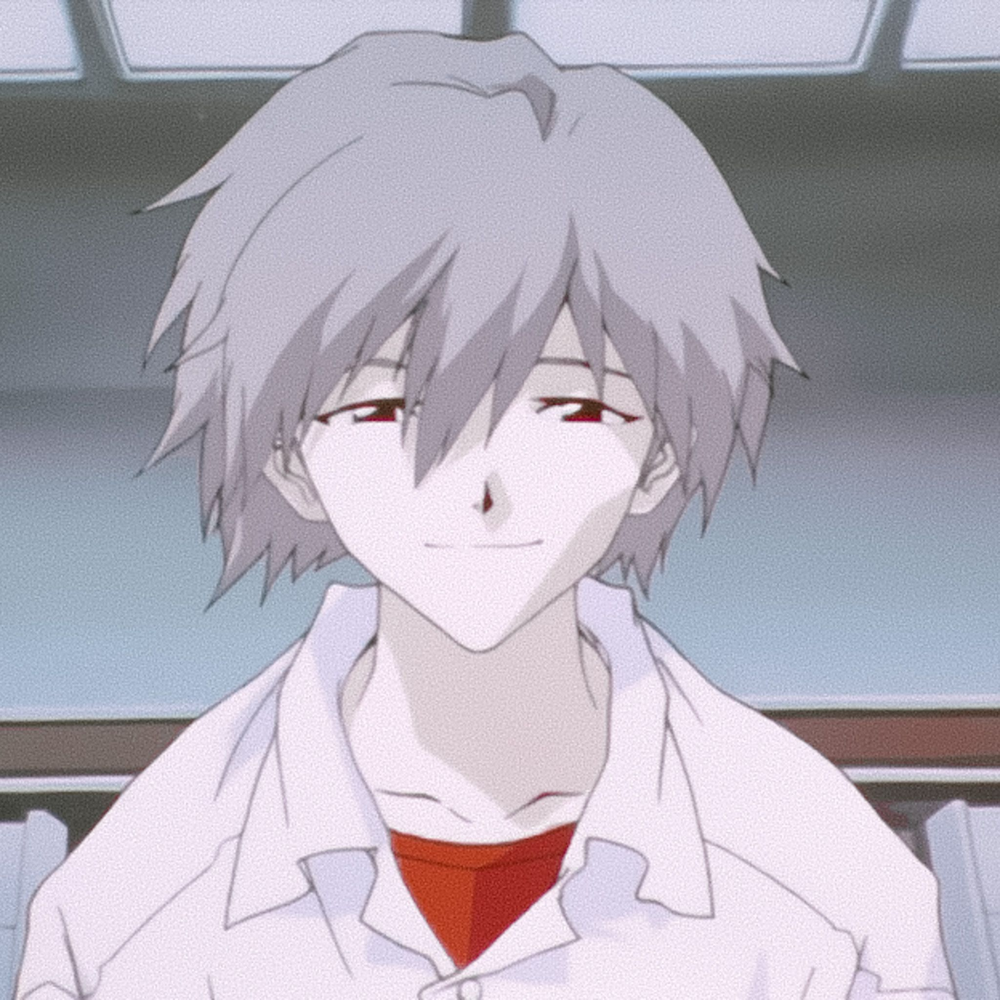

Neon Genesis Evangelion
Neon Genesis Evangelion, también conocido simplemente por Evangelion, es la franquicia de propiedades y medios japoneses que generalmente pertenece al estudio Gainax. La franquicia ha recaudado más de 150 mil millones de yenes entre 1995 y 2007. Las obras centrales de la franquicia cuentan con una historia compleja, en la cual se mezclan de forma eficaz el humor y la acción, con diversos elementos psicológicos y de ciencia ficción. La trama gira en torno a los esfuerzos de la organización paramilitar NERV para luchar contra seres hostiles, llamados ángeles. El arma principal de NERV para combatirlos son unos seres biomecánios gigantes, llamados Evangelion, los cuales son controlados por adolescentes. Uno de los pilotos, Shinji Ikari, es el protagonista principal
Shinji * Rey * Asuka * Toji * Kaworu
.jpg)
Shinji Ikari
El protagonista principal de la serie. Es un joven de catorce años, hijo de Gendo Rokubungi y Yui Ikari. Su padre le abandonó por motivos desconocidos a los cuatro años, pero una década después vuelve a reunirse con él para obligarle a pilotar el Evangelion Unidad 01, brindándole el título de Tercer Niño. Shinji es un personaje cuyos tormentos hacen de él una persona física y moralmente débil, pasiva y extremadamente apocada. Su iniciativa de obedecer cuanto le dicen le llevará a pilotar el EVA-01 a pesar del odio que siente hacia su padre, pero gracias a los personajes que entrarán en su nueva vida, Shinji comenzará a aceptarse a sí mismo como persona y a tomar sus propias decisiones. En la adaptación japonesa su seiyū es Megumi Ogata, mientras que en el doblaje español es Albert Trifol Segarra, y en el hispanoamericano es Víctor Ugarte.
Rey Ayanami
La primera elegida, encargada de pilotar el Evangelion Unidad 00 por orden de Gendo Ikari. Rei es una enigmática muchacha de catorce años de personalidad inexpresiva, hermética e introvertida, que oculta toda emoción y rara vez pronuncia palabra. Los datos sobre su infancia, familia y orígenes son desconocidos; en adición, posee un sorprendente parecido físico con Yui Ikari, la madre de Shinji, lo que hace dudoso el origen de Rei. Durante la serie Shinji y ella atraerán lentamente la simpatía del otro, lo cual irá haciendo que Rei tome iniciativas y llegue a expresarse de forma insospechada. En la adaptación japonesa su seiyū es Megumi Hayashibara, mientras que en doblaje español es Joël Mulachs, y en el hispanoamericano es Circe Luna.

Asuka Langley Sohryu
De catorce años y origen germano-nipón-estadounidense, Asuka es la piloto del Evangelion Unidad 02. Es definida como una chica enérgica, emocional y de temperamento opuesto a los de Shinji y Rei: en contraste con ellos, es independiente, competitiva y rebelde. Su sueño es impulsarse a sí misma hacia la adultez en un intento de huida de una dramática infancia, lo que a veces le hará parecer un personaje extraño y forzadamente infantil. Durante la serie, mantiene una complicada relación de amor/odio con Shinji. En la adaptación japonesa su seiyū es Yuko Miyamura, mientras que en doblaje español es Ana Pallejá, y en el hispanoamericano es Norma Echevarría.

Toji Susuhara
Piloto del Evangelion Unidad 03. Toji es un buen amigo de Kensuke Aida, y tiene constantes conflictos con Asuka Langley Sohryu. Su hermana pequeña resultó lastimada en la batalla entre el Ángel Sachiel y el Evangelion Unidad 01. Después de saber que Shinji Ikari es el piloto, Toji le da una paliza. Sin embargo, después de ver cómo sufría Shinji en la pelea contra samshiel, Toji empieza a respetarlo y se hacen buenos amigos.Durante el ataque de Shamshel, Kensuke comparte con Toji su loco deseo de presenciar la batalla y le dice que tal vez golpear a Shinji fue un error y es su obligación estar allí apoyándolo. Toji está de acuerdo y le ayuda a salir del refugio. Gracias a este acto imprudente, Toji y Kensuke casi mueren durante el combate. Ambos se salvaron gracias a Shinji, quien los rescata y ofrece refugio dentro del entry plug de la Unidad 01. Después de ver cómo sufría Shinji en la pelea, Toji lo perdona, pero el joven Ikari no va la escuela.
Kaworu Nagisa
Este joven se presenta inesperadamente como el Quinto Niño en un momento agitado y tardío de la serie. Kaworu es un joven nacido el día del Segundo Impacto y que mantiene una misteriosa conexión con los líderes de SEELE. Forjará una profunda relación emocional con Shinji, a quien dice amar, y gracias a él, Shinji aprenderá grandes valores de cara a la culminación de la historia. En la adaptación japonesa su seiyū es Akira Ishida, mientras que en doblaje español es Jordi Pons, y en el hispanoamericano es Ernesto Lezama.Además de ser el Fifth Children, Kaworu resulta ser Tabris, el decimoséptimo ángel. Posteriormente aparece en The End of Evangelion y en el manga de Evangelion hecho por Yoshiyuki Sadamoto.
